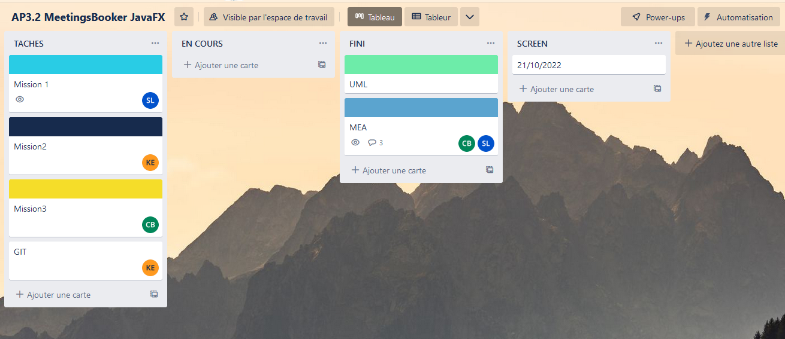

AP 3.2 | MeetingsBooker
L’objectif de cette AP est de développer l’application de back-office rendue accessible aux administrateurs du site, aux responsables, ainsi qu’aux commerciaux.
Mise en commun avec le tableau de synthese
Gérer le patrimoine informatique
on a en tant que ressources numériques : le cahier des charges, site Web de mettingBooKers, MEA.
Etant dans la startup MakeIT qui développe l’application, une norme a été créer concernant L’architecture MVC et nous est imposé . L’architecture MVC devra être respectée (« controller », « modelDAO », « modelDTO » et « view »)
On a mis en place quatre services grâce au cahier des charges. Il y a le loueurs, commerciaux, responsables, administrateurs. Puis on a vérifié tout cela grâce a la connexion pour voir si les services était bon
Travailler en mode projet
Grace au cahier des charges, on a pu identifier les taches et on a pu identifier les habilitations grâce au cahier des charges technique on a pu distinguer trois parties, puis pour chaque parties on a divisé en plusieurs taches qu’on a mis dans un trello.
Pour assurer une planification efficace des tâches et respecter les délais fixés, nous utilisons Trello. Chaque membre de l'équipe se voit attribuer des tâches spécifiques pour chaque période d'activité (AP). Si une tâche n'est pas terminée à la fin de l'AP, elle est reportée et finalisée ultérieurement. Ce processus nous permet de maintenir le rythme de travail et de nous assurer que les tâches sont complétées dans les délais prévus. Grâce à cette méthode, nous pouvons garantir la réalisation de nos activités à la date souhaitée, tout en maintenant une bonne organisation et une gestion efficace du temps.

Mettre à disposition des utilisateurs un service informatique
On a réalisé des test unitaires pour tester les dao a l’aide de Mockito. Mais vu qu’on a jamais vu MOCKITO j’ai utilisé JUNIT
On a mis en place une application back office qui permet de faciliter de faciliter la gestion des commerciaux, des lieux de meetings et du fichier client